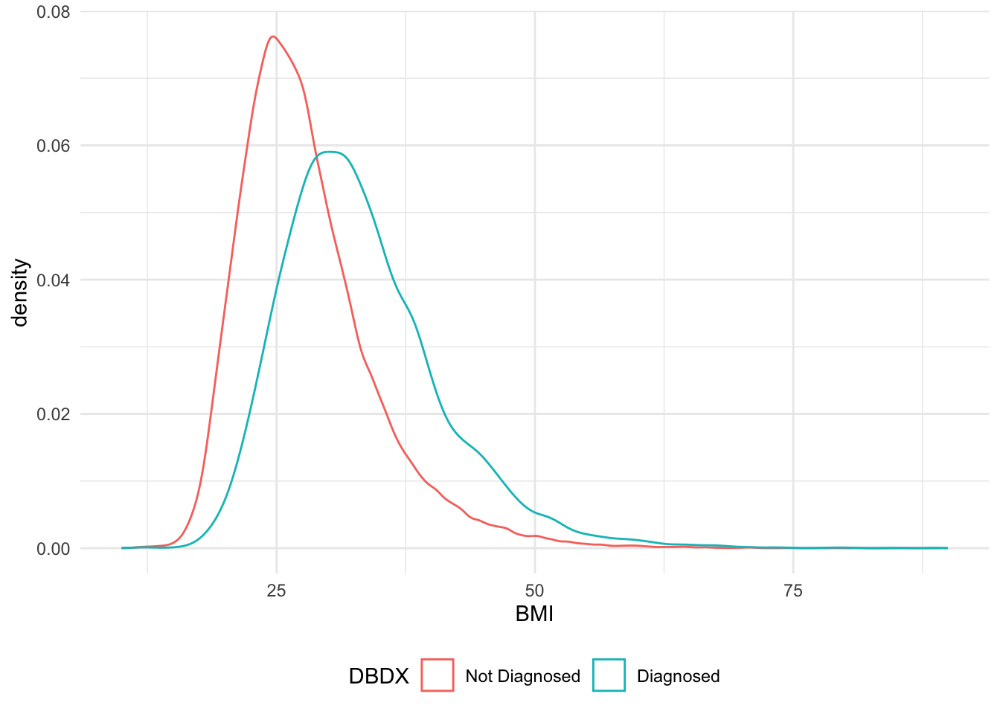

library(tidyverse)## ── Attaching core tidyverse packages ──────────────────────── tidyverse 2.0.0 ──
## ✔ dplyr 1.1.3 ✔ readr 2.1.4
## ✔ forcats 1.0.0 ✔ stringr 1.5.0
## ✔ ggplot2 3.4.4 ✔ tibble 3.2.1
## ✔ lubridate 1.9.3 ✔ tidyr 1.3.0
## ✔ purrr 1.0.2
## ── Conflicts ────────────────────────────────────────── tidyverse_conflicts() ──
## ✖ dplyr::filter() masks stats::filter()
## ✖ dplyr::lag() masks stats::lag()
## ℹ Use the conflicted package (<http://conflicted.r-lib.org/>) to force all conflicts to become errorslibrary(readr)
library(plotme)
library(glmnet)## Loading required package: Matrix
##
## Attaching package: 'Matrix'
##
## The following objects are masked from 'package:tidyr':
##
## expand, pack, unpack
##
## Loaded glmnet 4.1-8knitr::opts_chunk$set(
warning = FALSE,
message = FALSE,
fig.dim = c(12, 7))
theme_set(theme_minimal() + theme(legend.position = "bottom"))df_raw = read.delim("./Data/nhwsdata.txt") df = df_raw |>
# deal with nominal data
mutate(DBTYPE = if_else(is.na(DBTYPE), 0, DBTYPE),
DBRX = if_else(DBRX == 1, 1, 0, missing = 0),
DBIN = if_else(DBIN == 1, 1, 0, missing = 0)) |>
mutate(across(c(DESEX, DBDX,DBTYPE,DBRX,DBIN), ~factor(.))) |>
# mutate(across(c(BP, GH, MH, PF, RE, RP,VT, SF,MMAS), ~factor(., ordered = TRUE))) |>
mutate(across(c(BP, GH, MH, PF, RE, RP,VT, SF,MMAS), ~factor(.)))
df_encode = df |>
mutate(DESEX = factor(DESEX, levels = c(1, 2), labels = c("Male", "Female")),
DBDX = factor(DBDX, levels = c(0, 1), labels = c("Not Diagnosed", "Diagnosed")),
DBTYPE = factor(DBTYPE, levels = c(0, 1, 2), labels = c("Not Diagnosed", "Type 1", "Type 2")),
DBRX = factor(DBRX, levels = c(0, 1), labels = c("Not Using Oral", "Using Oral")),
DBIN = factor(DBIN, levels = c(0, 1), labels = c("Not Using Insulin", "Using Insulin")))
df |> skimr:: skim()| Name | df |
| Number of rows | 75000 |
| Number of columns | 22 |
| _______________________ | |
| Column type frequency: | |
| factor | 14 |
| numeric | 8 |
| ________________________ | |
| Group variables | None |
Variable type: factor
| skim_variable | n_missing | complete_rate | ordered | n_unique | top_counts |
|---|---|---|---|---|---|
| BP | 0 | 1.0 | FALSE | 5 | 100: 33803, 75: 24044, 50: 9809, 25: 5537 |
| DESEX | 0 | 1.0 | FALSE | 2 | 2: 38353, 1: 36647 |
| GH | 0 | 1.0 | FALSE | 5 | 85: 29988, 60: 24840, 100: 10211, 25: 8288 |
| MH | 0 | 1.0 | FALSE | 9 | 87.: 19548, 75: 16617, 62.: 11466, 50: 10728 |
| PF | 0 | 1.0 | FALSE | 5 | 100: 44167, 75: 11514, 50: 9269, 25: 5352 |
| RE | 0 | 1.0 | FALSE | 9 | 100: 40691, 75: 9330, 50: 7210, 87.: 6405 |
| RP | 0 | 1.0 | FALSE | 9 | 100: 32740, 75: 9959, 50: 8110, 87.: 8043 |
| SF | 0 | 1.0 | FALSE | 5 | 100: 42352, 75: 14258, 50: 11135, 25: 5155 |
| VT | 0 | 1.0 | FALSE | 5 | 75: 26031, 50: 25880, 25: 13262, 0: 5010 |
| DBDX | 0 | 1.0 | FALSE | 2 | 0: 66655, 1: 8345 |
| DBIN | 0 | 1.0 | FALSE | 2 | 0: 72703, 1: 2297 |
| DBRX | 0 | 1.0 | FALSE | 2 | 0: 67720, 1: 7280 |
| DBTYPE | 0 | 1.0 | FALSE | 3 | 0: 66655, 2: 7828, 1: 517 |
| MMAS | 67720 | 0.1 | FALSE | 5 | 0: 4652, 1: 1672, 2: 705, 3: 175 |
Variable type: numeric
| skim_variable | n_missing | complete_rate | mean | sd | p0 | p25 | p50 | p75 | p100 | hist |
|---|---|---|---|---|---|---|---|---|---|---|
| zKey | 0 | 1.00 | 551260.41 | 74229.92 | 13334.00 | 533041.75 | 563791.50 | 582541.25 | 601291.00 | ▁▁▁▁▇ |
| BMI | 1340 | 0.98 | 28.54 | 6.99 | 10.00 | 23.73 | 27.32 | 31.90 | 89.95 | ▆▇▁▁▁ |
| DEAGE | 0 | 1.00 | 48.36 | 16.66 | 18.00 | 34.00 | 48.00 | 63.00 | 100.00 | ▇▇▇▅▁ |
| MCS | 0 | 1.00 | 48.89 | 10.66 | -0.94 | 42.18 | 51.49 | 57.16 | 76.94 | ▁▁▃▇▁ |
| PCS | 0 | 1.00 | 48.70 | 10.36 | 4.85 | 43.23 | 52.09 | 56.15 | 75.13 | ▁▁▃▇▁ |
| RUHP6Q | 0 | 1.00 | 0.11 | 0.86 | 0.00 | 0.00 | 0.00 | 0.00 | 88.00 | ▇▁▁▁▁ |
| WPACTIMP | 0 | 1.00 | 21.90 | 28.29 | 0.00 | 0.00 | 10.00 | 40.00 | 100.00 | ▇▁▂▁▁ |
| CCI | 0 | 1.00 | 0.41 | 1.00 | 0.00 | 0.00 | 0.00 | 0.00 | 32.00 | ▇▁▁▁▁ |
# Detecting continuous and categorical variables
continuous_vars <- c()
categorical_vars <- c()
for(col_name in names(df)) {
# Assuming continuous variables are of type numeric and have more unique values
if(is.numeric(df[[col_name]]) && length(unique(df[[col_name]])) > 10) {
continuous_vars <- c(continuous_vars, col_name)
} else {
categorical_vars <- c(categorical_vars, col_name)
}
}
continuous_vars = continuous_vars[-1]df_encode |>
count(DBDX, DBTYPE, DBIN, DBRX#,wt = RUHP6Q
) |>
count_to_sunburst(fill_by_n = TRUE)df |> filter(!is.na(BMI)) |> group_by(DBDX) |> summarise(mean(BMI))## # A tibble: 2 × 2
## DBDX `mean(BMI)`
## <fct> <dbl>
## 1 0 28.0
## 2 1 33.2df = df |>
mutate(BMI = if_else(is.na(BMI) & DBDX == 0,27.95397,
if_else(is.na(BMI) & DBDX == 1, 33.21504,BMI)),
MMAS = as.numeric(as.character(MMAS)),
MMAS = if_else(is.na(MMAS),-1,MMAS))
df_encode = df_encode |>
mutate(BMI = if_else(is.na(BMI) & DBDX == 0,27.95397,
if_else(is.na(BMI) & DBDX == 1, 33.21504,BMI)),
MMAS = as.numeric(as.character(MMAS)),
MMAS = if_else(is.na(MMAS),-1,MMAS))
ggplot(df_encode, aes(x = BMI,col = DBDX)) +geom_density()
cat_result = tibble(
vars = categorical_vars) |>
filter(!(vars %in% c("DBRX","DBIN","DBDX","DBTYPE"))) |> # filter these out for 0 values
mutate(summary = map(vars, \(x) chisq.test(df[[x]], df[['DBDX']])),
summary = map(summary, broom::tidy ))|>
unnest(summary) |>
select(vars,statistic,p.value) |>
mutate(if_sig = if_else(p.value < 0.05,1,0))
cat_result## # A tibble: 10 × 4
## vars statistic p.value if_sig
## <chr> <dbl> <dbl> <dbl>
## 1 BP 1987. 0 1
## 2 DESEX 668. 2.28e-147 1
## 3 GH 5372. 0 1
## 4 MH 172. 4.76e- 33 1
## 5 PF 3278. 0 1
## 6 RE 526. 1.91e-108 1
## 7 RP 2623. 0 1
## 8 SF 575. 3.18e-123 1
## 9 VT 1291. 3.06e-278 1
## 10 MMAS 64399. 0 1con_result = tibble(
vars = continuous_vars) |>
#filter(!(vars %in% c("zKey"))) |> # filter these out for 0 values
mutate(#x = df|>filter(DBDX == 0) |> select(vars))
summary = map(vars, \(x) wilcox.test(df|>filter(DBDX == 0) |> select(x) |> pull(),
df|>filter(DBDX == 1) |> select(x) |> pull())),
summary = map(summary, broom::tidy ))|>
unnest(summary) |>
select(vars,statistic,p.value) |>
mutate(if_sig = if_else(p.value < 0.05,1,0))
con_result## # A tibble: 7 × 4
## vars statistic p.value if_sig
## <chr> <dbl> <dbl> <dbl>
## 1 BMI 156041410. 0 1
## 2 DEAGE 163195945 0 1
## 3 MCS 276598876 4.15e- 1 0
## 4 PCS 401515408 0 1
## 5 RUHP6Q 260082172. 2.07e-113 1
## 6 WPACTIMP 203637026 0 1
## 7 CCI 43254997 0 1corrplot::corrplot(cor(df |> select(any_of(continuous_vars))), "number")df_type2 = df |> filter(DBTYPE == 2)
x_matrix <- model.matrix(~ DEAGE+DESEX+BMI+DBRX+DBIN+
CCI+MMAS+PCS+MCS+BP+GH+VT+SF+MH+RE+RP+PF+WPACTIMP, data = df_type2 )[, -1] # Creating a model matrix, excluding the intercept
y_vector <- df_type2$RUHP6Q
lambda_values <- 10^seq(-10, 0, length.out=100)
# Fit a Poisson regression model using glmnet (for demonstration, using LASSO)
cv_fit <- cv.glmnet(x_matrix, y_vector,
family = "poisson",
alpha = 1,standardize=TRUE, lambda = lambda_values)
# Plot the cross-validation curve
plot(cv_fit)
# Extract the best model (lambda value that gives minimum mean cross-validated error)
best_lambda <- cv_fit$lambda.min
# Fit the model with the selected lambda
best_model <- glmnet(x_matrix, y_vector, standardize=TRUE,
family = "poisson",maxit=1000000, alpha = 1, lambda = best_lambda)for (i in continuous_vars){
p = ggplot(df_type2,aes_string(x = 'RUHP6Q',y = i))+geom_point() +geom_smooth()
print(p)
}